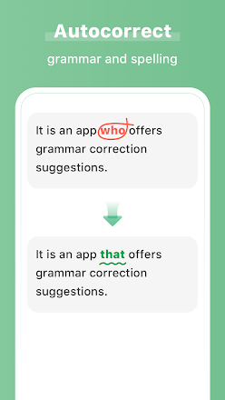
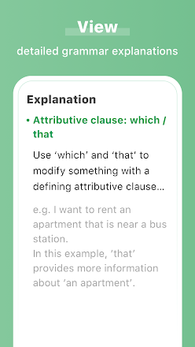

AI Grammar Checker for English
AI Grammar Checker for English - Check your grammar and spelling errors at any time. Whether writing academic English papers, proofreading workplace emails, hashing out business, or social writing, AI Grammar Checker could help you by correcting grammatical errors in real-time and make sure your message is clear and mistake-free. Main Features: English Grammar Auto-correct Whether misspelled words, inaccurate phrases, wrong verb tenses, subject-predicate inconsistencies, or punctuation, AI Grammar Checker can efficiently and accurately correct different kinds of spelling and grammatical errors for you. Massive Real Error Correction Data AI Grammar Checker is based on thousands of error correction data from real people on HelloTalk. Corrections are more genuine and accurate, as if there were a native speaker online at any time to help you check your English grammar. Every modification is in line with the way native speakers talk, which could make your English more authentic! Detailed Analysis Provided AI Grammar Checker will record each grammatical error and compare the original content with the corrected content to help you better understand the grammatical errors you often make. Thoughtful error correction tips to help you notice your grammar weaknesses and avoid repeating mistakes. What’s more, if you want to see the analysis from other grammar websites or Google search, you can search directly inside the application. Perfect Your Writing and Listening AI Grammar Checker also supports text reading. The proofread content matches authentic pronunciation, which allows you to cultivate a better feel for the language while remembering the correct English grammar. OCR Text Scanner AI Grammar has a built-in OCR camera function, which can accurately identify text in a picture, without having to manually input it, and automatically correct any grammar mistakes. Word Translation You can get the translation and pronunciation of words with just one click. At present, word translation supports translation in 109 languages including Chinese, Japanese, Korean, and so on. With automatic grammar correction, there won't be any obstacles to you improving your English. Here are some real reviews on Google Play: @Maggie Yung: It's a good app, helps me to improve my English writing. @deepa Subramanian: Awesome. It's so easy and will help us become more confident in what we write. It is very useful for formal chats and writing formal letters. Utilize AI Grammar Checker to improve your writing, so that grammar is no longer an obstacle when expressing yourself in English! If you have any comments or suggestions please email us: aigrammar@hellotalk.com * Learn more: https://www.aigrammar.com * Privacy Policy: https://www.aigrammar.net/privacy-policy * Terms of Service: https://www.aigrammar.net/terms-of-service
Downloads:


Screenshots:
 DETAILS
Offered By: AI English Grammar Checker Learning Tech
Size: 31.2MB
Developer: aigrammar@hellotalk.com
 Facebook Lite
Facebook Lite Messenger
Messenger SortPuz: Water...
SortPuz: Water...
 Facebook
Facebook